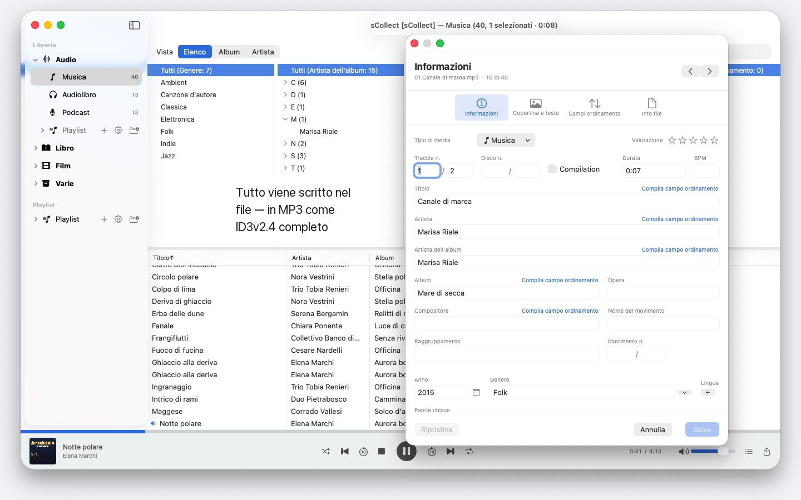
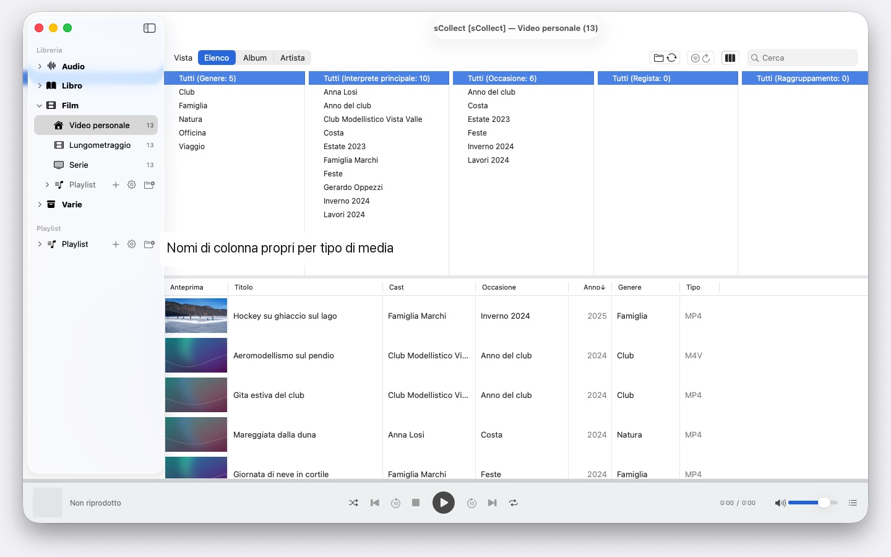

Migliaia di artisti, più Mac, qualsiasi macOS dalla versione 14: sCollect ordina musica, film e libri e scrive i tuoi dati nei file stessi. Senza account, senza cloud.


sCollect è una libreria per tutto ciò che si può collezionare: musica, film, video personali, audiolibri, podcast ed e-book — e anche per cose che non sono affatto file multimediali, per esempio monete o francobolli, fotografati e descritti. Come si chiamano le categorie lo decidi tu.
La differenza rispetto a un catalogo qualsiasi: sCollect scrive nei file. Quello che inserisci nell’editor non finisce solo nel database, ma nei metadati del file stesso. Il tuo lavoro resta così anche se un giorno smetterai di usare sCollect.
ORDINE, SENZA DOVERLO FARE TU
Durante l’importazione sCollect mette ogni file al suo posto — per tipo di media, artista, album o data, a seconda di come l’hai impostato. Ogni tipo di media può avere la propria cartella, anche su un altro disco: i film sul grande disco esterno, la musica su quello interno veloce.
Chi preferisce lasciare la collezione dov’è, la collega invece di copiarla. I file collegati non vengono mai toccati.
PER FOTO E RIPRESE VIDEO
Chi fotografa o filma archivia un tipo di media per data: durante l’importazione i file finiscono in cartelle per anno e mese, e il nome del file riporta la data di scatto, letta dal file stesso — per i video con un avviso quando la videocamera non indica il fuso orario. I prefissi della fotocamera come IMG_ spariscono dal titolo se lo desideri, si aggiunge una data ISO, e l’elenco e il disco ordinano allo stesso modo.
METADATI CHE ARRIVANO DAVVERO NEL FILE
Un editor per i singoli elementi, un secondo per molti in una volta sola. Entrambi scrivono nel formato che il file porta con sé — ID3v2.4 negli MP3, la struttura dei tag di MP4 e M4A, i commenti Vorbis in FLAC e OGG, i blocchi di testo di AIFF e WAV, DSF nelle registrazioni DSD, EXIF, IPTC e XMP nelle immagini.
Dove un formato non ha un campo per qualcosa, o un file è protetto da copia, sCollect mette accanto un file di accompagnamento invece di perdere l’informazione. Se il file diverge dalla libreria, l’editor lo dice prima che tu sovrascriva qualcosa.
QUELLO CHE ACCORCIA IL LAVORO
- Trova/Sostituisci su tutti i campi
- Trovare i duplicati sull’intera categoria, con un giudizio comprensibile su quale versione sia la migliore
- Un browser a colonne come in un programma per la musica, con selezione multipla per colonna. Migliaia di artisti senza scorrere: raggruppati per iniziale, A, AB, ABB – tre clic e ci sei
- Riproduzione di audio e video, con playlist e posizione di riproduzione memorizzata
TROVARE I FILE MANCANTI, INVECE DI CERCARLI
Un passaggio contrassegna ogni voce il cui file non c’è più e ne memorizza il risultato. Una vista dedicata mostra soltanto queste voci e spunta ciò che hai ricollegato.
PIÙ COMPUTER, UNA SOLA COLLEZIONE
Una libreria può registrare copie. Quello che modifichi nell’archivio principale viene riportato in seguito in ogni copia raggiungibile, file e tag compresi. Se una copia è offline, la modifica resta in attesa e viene recuperata non appena torna disponibile.
Il macOS di ciascun Mac non conta: un Mac con macOS 14 e uno con macOS 26 leggono la stessa collezione, e nessun aggiornamento di sistema la converte. Le copie però non sono un backup.
IMPORTAZIONE ED ESPORTAZIONE
Le collezioni esistenti entrano attraverso l’XML di iTunes, valutazioni e playlist comprese. Escono come sCollect-XML — senza perdite, per il trasloco e la copia di sicurezza —, come playlist per Apple Music oppure come iTunes-XML.
SUL TUO MAC, E SOLO LÌ
Nessun account, nessun cloud, nessuna analisi, nessuna pubblicità. sCollect lavora esclusivamente con le cartelle che gli dai.
Per questo sCollect non importa CD e non recupera da internet le informazioni sui brani — Apple Music sa già fare entrambe le cose. Importa lì il CD in AAC, Apple Lossless o MP3, e i file porteranno con sé le loro informazioni in sCollect. Così nessun servizio viene a sapere che cosa collezioni e come lo ordini.
In 24 lingue a libera scelta, ognuna con guida completa.
- Richiede macOS 14 o versioni successive
- 24 lingue
- Assistenza: SwiftAppsBavaria@gmx.net
Altre app
sVectorLift
Apri, visualizza e salva come SVG le vecchie clipart vettoriali: CorelDRAW, Windows Metafile e CGM.
SwiftRename
Rinomina file in blocco: in base alla data di scatto, con numerazione progressiva o direttamente ordinati in cartelle per anno e mese.
sName2Date
Scrivi la data dal nome del file come data di scatto in foto, filmati e registrazioni audio, così che un file come IMG_20240115_103000.jpg si ordini correttamente in qualsiasi gestore di foto. I dati di immagine e di filmato restano intatti; i PDF e gli altri file senza data di scatto ricevono la data del file e, su richiesta, anche il nome passa alla notazione ISO. Interi alberi di cartelle in una volta sola, e ogni esecuzione si può annullare con ⌘Z.
sName2Date Lite
L'edizione per un file alla volta: scrivi la data dal nome del file come data di scatto in una foto, un filmato o una registrazione audio, impostala manualmente, porta il nome nella notazione ISO e annulla tutto con ⌘Z, con le stesse capacità di sName2Date, solo senza cartelle intere.
sCollectPlay
Il lettore per la libreria: riproduci musica, film, audiolibri e podcast semplicemente da una cartella, da un file XML di iTunes o da una libreria sCollect, senza modificare i tag dei file. Con playlist, tracce audio e sottotitoli e, per i film, rallentatore e avanzamento fotogramma per fotogramma. Ciò che macOS non riproduce da sé, come MKV, AVI o DSD, viene passato a un lettore esterno.
sCollectPlay Lite
L'edizione essenziale di sCollectPlay: apri semplicemente una cartella, un file XML di iTunes o una libreria sCollect e riproduci musica, film, audiolibri e podcast, con playlist, tracce audio e sottotitoli, rallentatore e avanzamento fotogramma per fotogramma. Una sola fonte per sessione; browser a colonne, playlist personali e fonti usate di recente restano riservati alla versione completa.
sBikeBridge
Analizza le uscite in bici senza caricarle su un portale: importa i file FIT di qualsiasi ciclocomputer che registri in questo formato, oltre a GPX e TCX. Le uscite restano in una libreria propria sul Mac, con mappa, potenza e frequenza cardiaca, foto e note; l'importazione riconosce i duplicati. Indicatori per anno o per mese e filtri per distanza, dislivello e durata rendono le uscite confrontabili. Su richiesta, la mappa è disponibile anche offline.